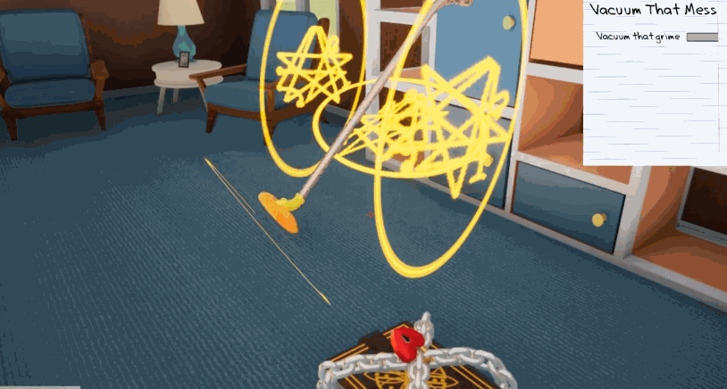
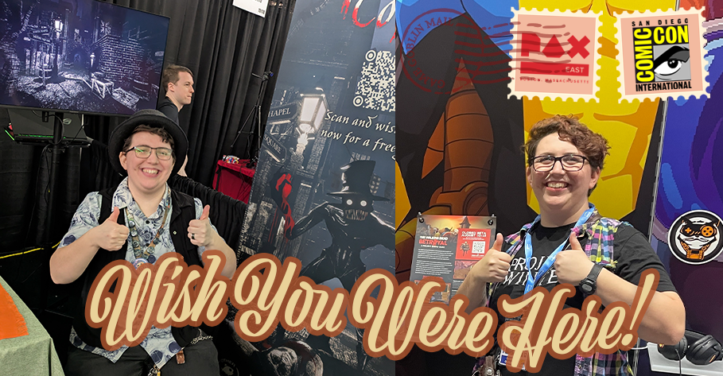

Kate Olguin
Game Designer • Community Coordinator
Game Designer • Community Coordinator

Upcoming PC online multiplayer mystery-solving game set in a grim Victorian London, with co-op and social deduction modes.
Upcoming PC online multiplayer mystery-solving game set in a grim Victorian London, with co-op and social deduction modes.

Online multiplayer survival-social deduction action set in the world of The Walking Dead on PC.
Content updates for longrunning online multiplayer survival-social deduction title with a user base in the millions on PC, Xbox, PlayStation, and Switch.

Level packs for Apple Arcade platformer with unique abilities for SpongeBob & friends.

Narrative-focused simulation game made by a small team about a 1950s suburban housewife's home being invaded by Cthulhu.
Hi! I'm Kate Olguin (any pronouns), a game designer from the Boston area and a board member for Boston Game Dev Inc,
a 501(c)(3) nonprofit focused on supporting the local game development community. I'm also on the 2025 Forbes
30 Under 30 list for games!
Games are a wonderful amalgam of arts and technologies, and
the best games use their component pieces in concert to create experiences that can't be done in
any other medium! In pursuit of great game design, I have developed a deep love of the disciplines that make games special.
Before entering the industry full-time in 2020, my collegiate focus was on visual arts for games, with a minor in music.
Nowadays, these fields remain present in my life through side projects like custom playing cards and self-released songs.
Programming is another passion of mine - in fact, I programmed the very website you are on right now!
Being able to make games as my career has been a dream come true, and I care greatly about empowering others to achieve the same!
The desire to share this dream is a driving factor of my involvement with the local game development community, and the reason I've taught
as an adjunct at the collegiate level.

Do you have an interesting project you want to collaborate on? Do you fancy a chat about game development? Do you want to show me a cool bug you found? Drop me a line!